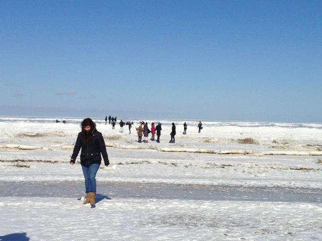
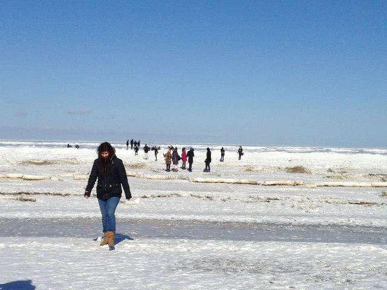
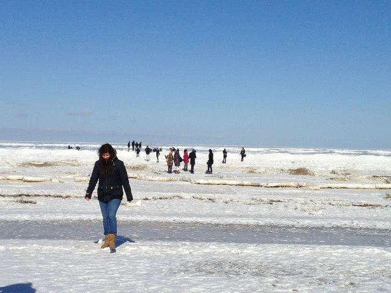
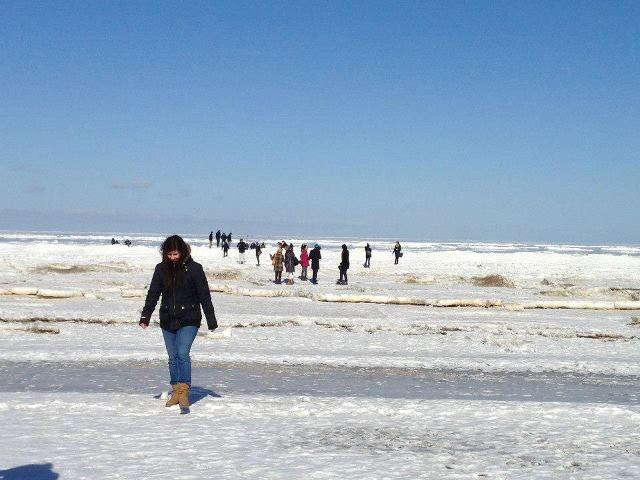

Let's do business together
Looking for a born-ready marketeer with a passion for IT? Than we might be a picture perfect match! Marketing and business management are my cup of tea, so you won't be surprised when you have a look at my academical background. What might surprise you is my current job... Technical Software Engineer. A little shocked, aren't you?! Well it's not that much of a career twist! Everything nowadays is automatized and digital, so I was eager to broaden my technical background. Have a look at your own business processes, how much of them are controlled by computers? It might come in handy to be able to understand and adapt the programs that are helping you develop your business isn't it? As a marketeer I noticed the same ongoing process, we're floating away from the classic print-adds, heading for the big digital ocean. Since I feel like you need to be one step ahead of new trends, I decided to jump into software development, going the extra mile to help businesses develop at a fast pace. Feel free to have a look at my academic and professional experience, and let's meet!